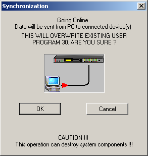
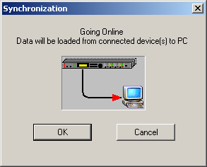

Going online via RS-232 or MIDI is described in the Readme file. Going online via RS-485 is a little bit different. To do so, make all connections and settings as described in the chapters 1-4 of the Readme file.
There are two ways for going online. The first way is to create a project in RACE consisting of one or more Dx38 devices. When going online project data is always written to the real world devices. The second way is to go online without project. RACE will create a project and add Dx38 devices found via RS-485 into the project automatically.
Make sure that you have the same number of devices in your project as are really connected via RS-485. Also check, that the Device Ids of the devices match to those on your PC-screen. Then choose Remote > RS-485 Remote.
RACE performs a netscan and searches for all connected devices. A window opens with a table in it. On the left column of the table you can see your PC devices with their Device Ids. On the right side, RACE lists all devices that it finds during the netscan. If a found device has the same device ID than that on the PC, there will be a green checkmark, if not there will be a red cross or a blue question-mark ( for example, if you have 4 devices in RS-485 network and 2 devices in your current project on PC, 2 devices will be marked with the blue question-mark). RACE can only stay online when there are no red checkmarks.
If RACE successfully found all devices, you will be asked if the current data in the project should be really written to the real world units.

If you choose OK, all the settings (including the program) of the PC devices are sent to the corresponding Dx38 devices. If you choose Cancel RACE will stay off-line.
Being online, RACE can identify it’s corresponding Dx38 devices, by clicking into the virtual LCD-Display on the PC screen.
Clicking on the line “Dev: xxxxxx” causes the corresponding Dx38 device to light up all it’s LEDs.
Clicking on the line “Grp: xxxxxx” causes all corresponding Dx38 devices (i.e. all members of that group) to light up their LEDs.
To control an existing PA system select Remote > RS-485 Remote after starting RACE. RACE performs a netscan and searches for all connected devices. A window opens with a table in it. On the right side RACE lists all devices that it finds during the netscan. After RACE found all devices and added them to your project, you will be asked if the data from the units should be read from to the real world units.

If you choose OK RACE will read all the settings (including the program) and go online. If you choose Cancel RACE will stay off-line.
If a device has not been found it can have one of the following reasons:
The device is switched off
The RS-485 wiring to that device is not good (e.g. a bad cable)
Your cable length is too long (there is a maximum of 1200 meters)
You have two devices running with the same RS-485 Device ID.